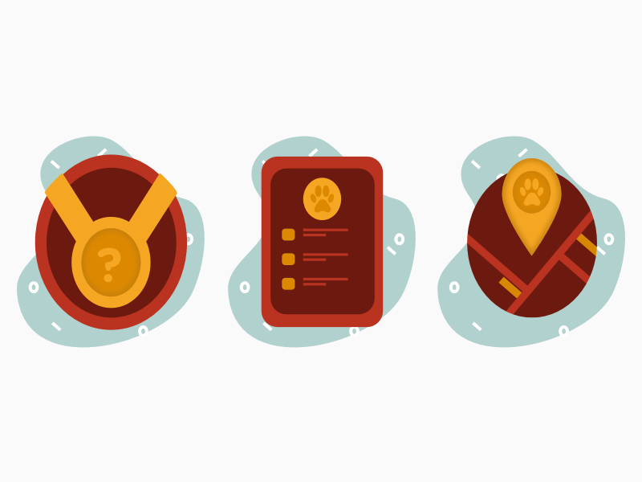
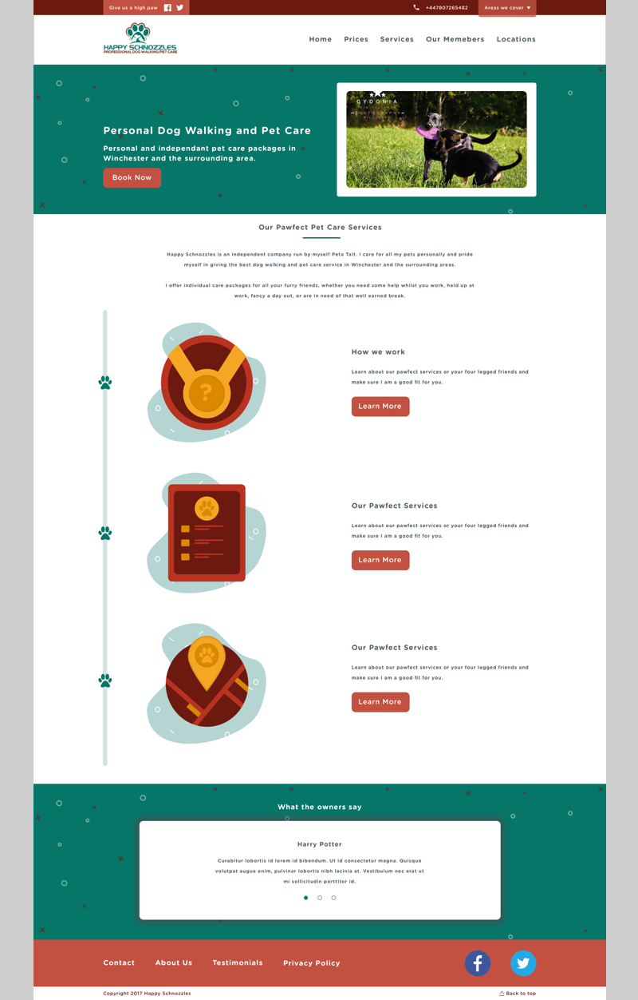

For more information, call today at (44)7539848390
Copyright 2017. Kieran Glover Bespoke Branding & Design.
I approached Peta at Happy Schnozzles as I noticed that the existing website wasn't responsive and could do with an improved layout to contribute to a better user experience. It was important that the new website would preserve SEO listings and differentiate Happy Schnozzles from other companies in the local area.
The initial design was close to the final site that was developed. However, there were some design assets that were later taken out as it was agreed that these didn't fit the brand.
As can be seen in the earlier designs, the creative direction adopted a more illustrative style. However it was later the more fun and quirky aspects of the site could be implemented in better way.
Looking for a digital design expert for your next project?
As mentioned, a big factor in creating the site was looking for ways to inject fun and personal content to help distinguish Happy Schnozzles from other dog walking companies in the area. One main page in which this was most evident was the Members page.
The Members page was inspired by the concept of Polaroid images on a pin board. Each Polaroid included the dog name and some fun content that captures the characteristics of each pet. Having this captures all the main factors outlined in the brief as it was quirky, unique and personable.
Visit Happy SchnozzlesSee all projects"I am so pleased to have found Kieran and so thankful to him for building me the most wonderful website to be proud of.He was very patient, proffessional and listened well, he understood my vision and with creativity took on my inspiration with complete confidence. I have also asked Kieran to stay on board to help out with monthly maintenance, it is so great to have the help with such a busy work schedule."
Copyright 2017. Kieran Glover Bespoke Branding & Design.